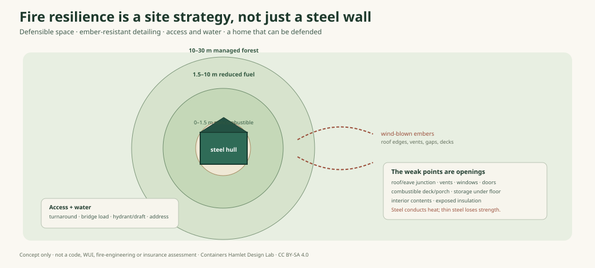

Forest fire resilience
Steel helps. It is not a fire strategy.
A steel container is noncombustible, but a home burns through its openings, roof edges, vents, decks and contents. In a forest, the site, the ember detail and the ability of firefighters to reach water matter as much as the hull. This page sets out the questions and the limits; it is not a fire-resistance rating or a WUI approval.
Concept only. No assembly, clearance, water supply or access route here is certified. Confirm the actual site with the local fire department, building official, conservation authority, insurer and a fire-protection engineer.
From one home to a defendable hamlet
Ontario's FireSmart guidance, forest-fire danger ratings and outdoor-fire rules are necessary, but they are mostly property and compliance measures. A hamlet needs a community wildfire protection plan that links the homes to each other and to the fire service.
- Access: a loop or two-way route, turnaround, bridge load limits, year-round clearance and address signs.
- Water: a dedicated fire reserve, dry hydrant/draft point or cistern with a connection the fire service has tested.
- Fuel: shaded fuel breaks, limbing, spacing, dead-material removal and a maintenance calendar across parcel boundaries.
- People: named roles, a phone tree/radio, evacuation triggers, a meeting point, medication/pet plans and vulnerable-neighbour check-ins.
- Recovery: insurance review, document copies, temporary shelter and a rebuilding plan.
Owner-level FireSmart work is necessary but not sufficient. The community resilience brief sets out the hamlet-scale layers; the water page separates domestic storage from a tested fire reserve.
What the steel hull does and does not do
| Helps | Still exposed |
|---|---|
| The hull is noncombustible and does not add timber-frame fuel to the wall. | Thin steel conducts heat and can lose strength when hot; it is not automatically a fire-resistance rating. |
| A simple metal roof and closed eaves can reduce ember entry. | Roof-to-wall junctions, vents, doors, windows, service penetrations and open soffits are entry points. |
| A steel shell can limit concealed combustible cavities if the insulation and cladding are detailed correctly. | External insulation, rainscreen cavities, timber cladding, decks, porches and stored goods can burn. |
| The shell may survive a passing fire better than a timber wall. | Smoke, interior furnishings, battery/PV systems and heat transfer can make the home uninhabitable. |
Defensible space, without clearing the forest

- 0–1.5 m: noncombustible surface and wall base; no wood mulch, firewood, propane, vehicles or combustible storage. Keep the foundation/floor edge clear.
- 1.5–10 m: low-density, low-height planting; separate shrubs; prune lower limbs; maintain irrigation and remove dead material. This is a fuel-reduction zone, not a bare-earth moat.
- 10–30 m: managed forest with limbing, spacing, ladder-fuel removal and access for maintenance. Preserve mature trees and shade where the fire plan allows.
- Access: a road and turnaround that fire apparatus can use, with bridge load limits and address signage. A narrow path is not fire access.
- Water: a hydrant, draft point, cistern or stored water that the fire service can actually use; confirm with the department, not just the design team.
Building measures worth specifying
Building measures worth specifying
| Measure | Why | Limit |
|---|---|---|
| Class A roof assembly | Reduces roof-covering fire performance risk. | Class A is not a wildfire rating; edge, eave and vent details still matter. |
| Closed, noncombustible eaves/soffits | Denies embers a sheltered entry into the roof cavity. | Ventilation must still work; do not seal a roof that needs venting without redesign. |
| Ember-resistant vents | Blocks the most common ignition path. | Must be listed/tested for the application and maintained; not a screen tacked over an opening. |
| Tempered or laminated glazing | Resists radiant heat and breakage better than annealed glass. | No glazing is fireproof; frame, seal and shutter details matter. |
| Noncombustible deck/porch | Removes a large horizontal fuel surface and ember trap. | Structure, connections and drainage still need design; a steel pan is not automatically fire-rated. |
| Exterior shutters/covers | Protects openings when the home is closed during an evacuation. | Must be deployable before evacuation and must not block egress from inside. |
| No combustible storage under the floor | Removes a fire directly below the home. | Skirting can hide storage; design explicit, lockable, noncombustible storage elsewhere. |
Codes, standards and what is actually in force
Codes, standards and what is actually in force
- 2025 National Model Codes are available from the Canadian Board for Harmonized Construction Codes. Model codes are not automatically the law in Ontario; provincial/territorial adoption and amendments govern.
- Housing, Infrastructure and Communities Canada — climate-resilient codes, standards and guidance is a federal resource, not a site approval.
- FM Approvals — modern buildings burn differently explains why insulation, cavities, roof assemblies and PV change fire behaviour. It is an industry/standards perspective, not a Canadian code.
- Senator Rosa Galvez — building code discussion paper and NEEP — energy efficiency is life-safety frame codes as more than minimum fire safety; they are policy commentary.
- University of Waterloo thesis, ClimateData.ca buildings module and Canadian Consulting Engineer provide climate/design context; they are not a fire test of this house.
- IBHS wildfire demonstration illustrates ember and building-performance research; it is not a product certification for this design.
The current model has no sprinkler, fire-resistance rating, WUI setback, hydrant or water-supply design. Those are open questions, not hidden assumptions.
What the editor can record now
What the editor can record now
The editor now records a fire-resilience intent: roof class, closed eaves, ember-resistant vents, tempered/laminated glazing, noncombustible deck, exterior shutters, defensible-space distance and whether fire access/water is confirmed. It does not calculate fire resistance, radiant heat, ember exposure, sprinkler performance or insurance acceptability.
Use the checklist as a brief for the fire department and insurer. Do not treat a checked box as a code approval.